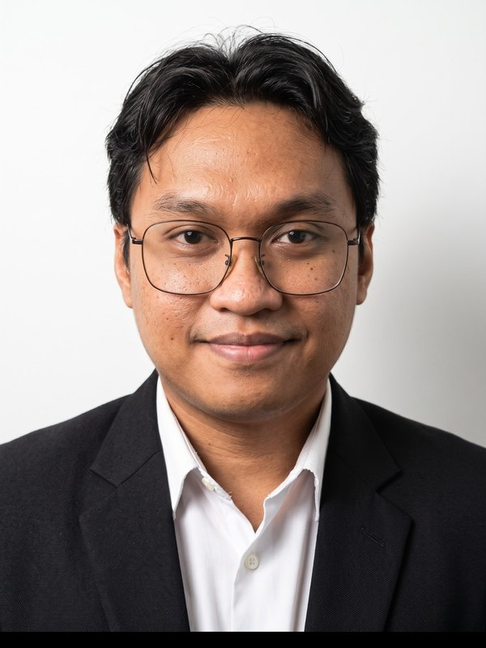

Naufal Aufa Afaf
Kepala Subbagian PDDikti · FISIP Universitas Muhammadiyah Tangerang

Ringkasan
Kepala Subbagian PDDikti (Pangkalan Data Pendidikan Tinggi) FISIP Universitas Muhammadiyah Tangerang. Sejak 2023 mengelola data dosen dan mahasiswa, menyusun laporan akademik, serta melakukan validasi dan sinkronisasi data ke PDDikti. Lulusan S1 Communication Science yang terbiasa membuat website dan alat bantu untuk layanan akademik. Sebelumnya bekerja di bidang produksi dan quality control.
Pengalaman
Apr 2026 – sekarang
Kepala Subbagian PDDikti
FISIP, Universitas Muhammadiyah Tangerang
- Memimpin pengelolaan sistem dan data pendidikan tinggi di lingkungan FISIP.
- Menjaga akurasi, integritas, dan konsistensi data akademik sebagai dasar tata kelola.
- Validasi, rekonsiliasi, dan sinkronisasi data dosen dan mahasiswa di PDDikti.
- Menjembatani kebutuhan administrasi akademik dengan solusi digital yang terukur dan berkelanjutan.
Sep 2023 – sekarang
Academic Data & System Officer
Universitas Muhammadiyah Tangerang
- Mengelola basis data mahasiswa secara akurat dan terstruktur.
- Menyusun laporan akademik untuk pelaporan nasional PDDikti; validasi dan sinkronisasi data untuk kepatuhan regulasi.
- Berkoordinasi lintas program studi dalam penyusunan laporan semester; mengoptimalkan proses administrasi berbasis sistem.
Nov 2021 – Okt 2022
Production Operator
ParagonCorp (PT Paragon Technology and Innovation) · kontrak
- Operasi mesin produksi kosmetik cair (Liquid, Production Core Downstream), pengujian sampel, pengemasan, kendali takaran dan mutu.
Sep 2020 – Jan 2021
Quality Control Analyst
Al Qolam, Taman Tekno BSD City · kontrak
- Pengujian sampel dan pengembangan Smart Pen & Monitoring Al-Qur'an.
Feb 2016 – Sep 2017
Robotics Operator
PT Mayora Indah Tbk
- Operasi mesin robot produksi, pengemasan, dan sealer; penerapan 5R.
Proyek pilihan
SiPaling FISIP
sipalingfisip.web.id
Portal layanan akademik fakultas: pengajuan judul dan revisi tugas akhir, transkrip dwibahasa otomatis dari SIMAK, template kelulusan & dropout PDDikti (diolah di peramban), ujian berbasis komputer dengan pengawasan dan penilaian esai berbantuan AI. 55 versi pembaruan, 50 skrip uji otomatis. Next.js, Supabase, Claude AI.
AIPPTM
aipptm.org
Situs Asosiasi Ilmu Pemerintahan Perguruan Tinggi Muhammadiyah dan jurnal OJS 3.5: direktori 19 perguruan tinggi anggota, 10 jurnal afiliasi dengan peringkat SINTA, server Google Cloud dengan HTTPS dan cadangan otomatis.
PT Lembaga ACCB Inst
accbinstitute.web.id
Situs penerbit buku akademik: katalog, rak buku 3D, alur pengajuan naskah, legalitas penerbit, dua bahasa.
Mesin Video Edukasi
github.com/serfusion/bang-motion
Basis data fakta bersumber yang otomatis menjadi video pendek bersuara dan bersubtitle (Indonesia / Inggris), dengan panel web dan antrean render.
Keahlian
Data pendidikan tinggiPDDikti Feeder, validasi & rekonsiliasi data, sinkronisasi dosen & mahasiswa, pelaporan semester, kelulusan & dropout, transkrip & arsip nilai
Sistem akademikAnalisis kebutuhan layanan, portal layanan akademik, ujian berbasis komputer, OJS, WordPress
TeknologiNext.js, Supabase / PostgreSQL, Python, SQL, Excel, Google Cloud, Vercel
AI & pendukungClaude, Gemini, ChatGPT, otomatisasi alur kerja, Adobe Photoshop, Premiere Pro, quality control, 5R
Pendidikan
2015 – 2019
Universitas Muhammadiyah Tangerang
Sarjana (S1) Communication Science · IPK 3,53
Kegiatan: Peneliti Karangan Ilmiah
Sukarelawan
Mar 2018 – Mei 2019
Research Analyst
Badan Siber dan Sandi Negara (BSSN)
Volunteer Staff
Komisi Pemilihan Umum Republik Indonesia (KPU RI)